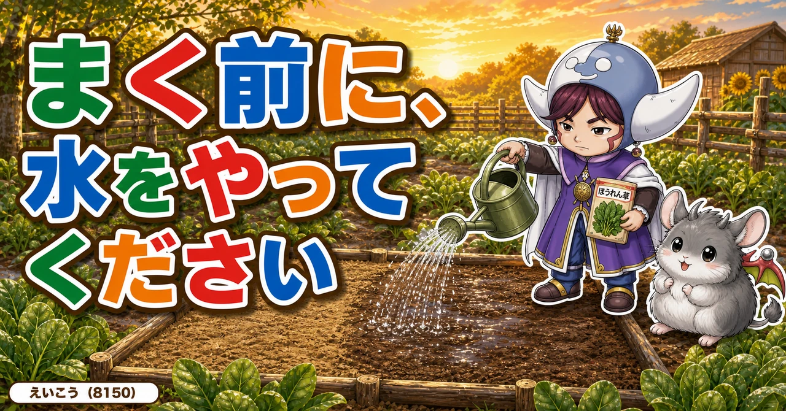
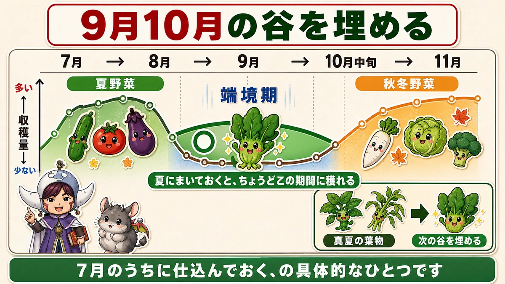
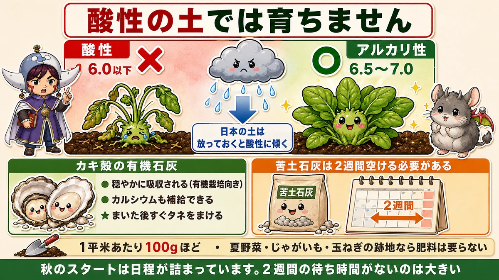
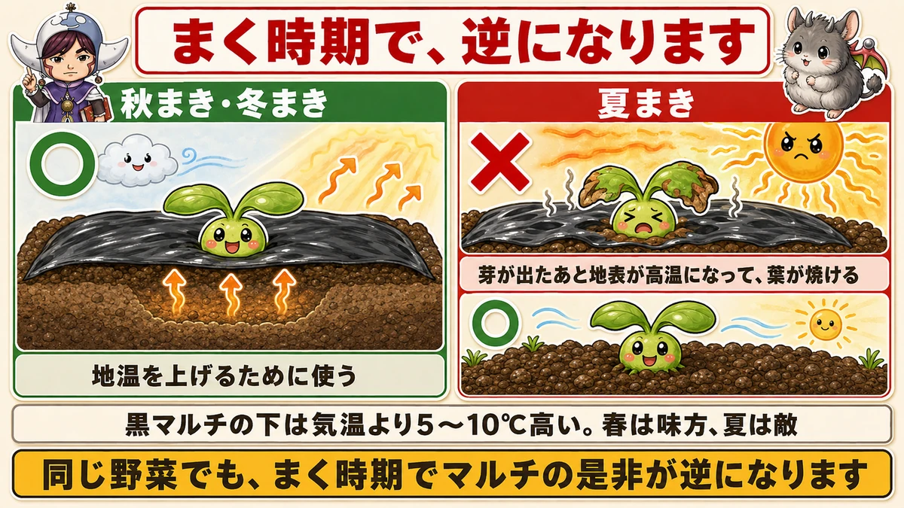
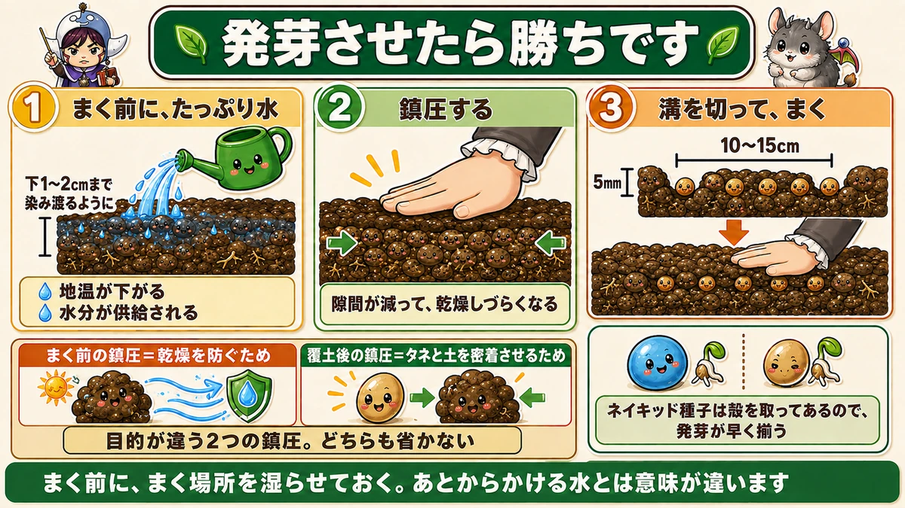

まく前に、水をやってください🥗 ほうれん草は発芽させたら勝ちです

🥗「まいたのに、まばらにしか出なかった」
🥗「毎年、ほうれん草だけうまくいかない」
🥗「9月10月は、穫るものがなくて寂しい」
どうも、8150（えいこう）です🌱 家庭菜園歴8年、理科の教員免許を持っていて、有機・無農薬で野菜を育てています。
ほうれん草は、簡単そうに見えて、うまくいかない野菜の代表だと思います。
先に、この記事でいちばん言いたいことを言っておきます。
★ほうれん草は、発芽させたら勝ちです。
前ににんじんの話をしたとき、「芽が出たら勝ち」とお伝えしました。★ほうれん草もまったく同じです☺️
★端境期を、埋められます
9月10月は、穫るものが少ない
前に7月号で、端境期（はざかいき）の話をしました。
★9月から10月の中旬は、収穫物が少なくなる時期です。
夏野菜は終わりに向かい、秋冬野菜はまだ穫れない。★その谷間です。

★夏まきのほうれん草が、その谷を埋めます
そこで役に立つのが、これです。
★夏にまいたほうれん草が、ちょうどこの期間に穫れます。
前回、モロヘイヤと空芯菜が真夏の葉物になるとお伝えしました。★ほうれん草は、その次の谷を埋めてくれます。
★「7月のうちに仕込んでおく」の、具体的なひとつです。
夏まきが難しい理由
正直に、書いておきます
ただし、★夏まきのほうれん草は難しいです。理由が2つあります。
★1. そもそも、夏の野菜ではない
★ほうれん草は、秋から冬、そして春先に育つ野菜です。
★夏の高温は、生育適期ではありません。★もともと得意でない季節にやっている、ということです。
★2. 虫が多い
★夏は雨が多く、温度も高いので、虫が多い時期です。
★病気にもかかりやすく、虫にも食われる。★収量が落ちるリスクがあります。
だから、品種を選びます
難しいぶん、道具で補います。★品種選びです。
★ミラージュ
- ★暑さに強い
- ★べと病への抵抗性がある
- ★高温のときに生育が遅れにくい
★アトラス
- ★昔からある定番品種
- ★8月からまける
- ★冬もまける
- ★★1袋買えば、夏まき・秋まき・冬まきと長く使えます
★近年は、夏まきに適した品種が増えてきています。★タネ袋の裏を見て、「夏まき可」と書いてあるものを選んでください。
前にタネ袋の記事でお伝えしたとおり、★答えは裏に書いてあります。
★★酸性の土では、育ちません
ほうれん草の、いちばんの特徴
ほうれん草には、はっきりした好みがあります。
★酸性の土を嫌います。

日本の土は、雨が多いので★放っておくと酸性に傾きます。前に寒起こしの記事でもお伝えしました。
★つまり、何もしないと、ほうれん草にとって不利な土になっていきます。
★アルカリ性に寄せて、カルシウムを足す
やることは2つです。
- ★土壌のpHを、アルカリ性に寄せる
- ★カルシウムを補給する
この2つを、1つの資材でできます。
★★カキ殻の有機石灰を使います
私が使うのは、これです。
★カキ殻の有機石灰。
利点が3つあります。
★1. 穏やかに吸収される
★有機栽培にこだわるなら、こちらが向いています。急激に効かないぶん、入れすぎの失敗が起きにくいです。
★2. カルシウムが入っている
カキの殻ですから、当然です。★pH調整とカルシウム補給が同時にできます。
★3. ★★まいた後、すぐタネをまいても問題ない
★これがいちばん大きいです。
苦土石灰との、いちばんの違い
苦土石灰を使う場合、★まいてから2週間ほど空ける必要があります。
★有機石灰は、その日にまけます。
秋のスタートは日程が詰まっています。★2週間の待ち時間がないのは、大きな利点です。
★余裕があれば1〜2週間寝かせてもいいですが、必須ではありません。
量は、1平米あたり100g
目安です。
★1平米あたり、100gほど。
前に追肥の記事で「移植ごて1杯が約30cc」とお伝えしました。★このくらいの感覚で、軽くまく程度です。
★肥料は、入れなくていいことがあります
もうひとつ、うれしい話です。
★夏野菜の跡地なら、肥料分が残っています。
★改めて肥料を入れる必要はありません。
そして、★じゃがいもや玉ねぎの跡地も有効に使えます。
前に大根の記事で「大根の跡地は根張りがよくなる」とお伝えしました。★跡地には、それぞれ性格があります。
★★夏まきでは、黒マルチを使いません
ここが秋冬との違いです
大事な使い分けがあります。
★夏まきのほうれん草では、黒マルチも穴あきマルチも使いません。

理由は、葉が焼けるから
なぜか。
★マルチを使うと、芽が出たあと地表が高温になって、葉が焼けてしまいます。
前に猛暑対策の記事で、こうお伝えしました。
★黒マルチの下は、気温より5〜10℃高い。★春は味方、夏は敵。
★ここでも、まったく同じことが起きます。
秋まき・冬まきなら、使います
もちろん、時期が違えば話は別です。
- ★秋まき・冬まき … マルチを使う（地温を上げるため）
- ★夏まき … 使わない（地温を上げてはいけないから）
★同じ野菜でも、まく時期でマルチの是非が逆になります。
★★発芽させる、3つの手順
ここが本題です
ほうれん草でいちばん大事なところです。
★夏は、雨で濡れても日中にすぐ乾きます。
そういう土にタネをまくと、どうなるか。
★温度が高くて水分が足りないので、発芽が遅れたり、発芽しないタネが増えます。

★★1. まく前に、たっぷり水を与える
順番が大事です。
★タネをまく前に、水をやってください。
- ★表面だけでなく、土の下1〜2cmまで染み渡るように
- ★少し水が染み込みづらくなるまで、しっかり
★これで2つのことが起きます。
- ★地温が下がる
- ★水分が供給される
★ほうれん草の発芽にとって、いい環境ができます。
定植のときと、同じ考え方です
前に苗の植え方の記事で、こうお伝えしました。
★苗を置く前に、穴へ水を注ぐ（水ぎめ）。
★タネも同じです。★まく前に、まく場所を湿らせておく。
★あとからかける水とは、まったく意味が違います。
★2. 鎮圧する
水をまいたあと、土の様子を見てください。
★まだふかふかしているなら、タネをまく前に鎮圧します。
理由があります。
★土の中の隙間が少なくなり、乾燥しづらくなります。
隙間が多いと、そこから水分が抜けていきます。★押さえておけば、水が長くとどまります。
★このくらいの鎮圧なら、まく前にやっても影響ありません。
★3. 溝を切って、まく
準備ができたら、まきます。
- ★溝の深さは、5mm程度
- ★溝と溝の間隔は、10〜15cm
浅めです。★深く埋めすぎると出てきません。
そして★まいて覆土したら、もう一度鎮圧してください。前回お伝えしたとおり、★発芽しない最大の原因は鎮圧不足です。
★鎮圧は、2回出てきます
整理します。
- ★まく前に、水をやって鎮圧（乾燥を防ぐため）
- ★覆土したあとに鎮圧（タネと土を密着させるため）
★目的が違う2つの鎮圧です。どちらも省かないでください。
★タネ袋の「ネイキッド」
発芽が揃わない、もうひとつの理由
前にタネ袋の記事で、この話をしました。
★ほうれん草のタネには、かたい殻がついています。
★その殻が水を通しにくいので、ほうれん草は発芽が揃いにくい野菜です。
★殻を取ってあるタネがあります
そこで、こういうタネが売られています。
★ネイキッド種子。「裸のタネ」という意味です。
★殻を取り除いてあるので、水がすぐ入ります。★発芽が早く、そろいます。
★ほうれん草で苦労した経験があるなら、ここを変えるだけで結果が違います。
水と、殻と、両方から攻める
まとめると、こうです。
- ★土の側 … まく前に水を入れて、鎮圧する
- ★タネの側 … 殻を取ってあるものを選ぶ
★どちらも「水をタネに届ける」ための工夫です。
★発芽させたら勝ち。そこに全部の手をかけます。
まく前の10分
この記事の要点
- ★ほうれん草は、発芽させたら勝ち（にんじんと同じ）
- ★9月から10月中旬は端境期。★夏まきほうれん草がその谷を埋める
- 夏まきが難しい理由＝★そもそも夏の野菜ではない／★雨と高温で虫が多い
- 品種は★ミラージュ（暑さに強くべと病に抵抗性）／★アトラス（8月からまけて冬もまける）
- ★アトラスは1袋で夏・秋・冬まで使える
- ★★ほうれん草は酸性の土を嫌う。★日本の土は放っておくと酸性に傾く
- ★アルカリ性に寄せて、カルシウムを補給する
- ★★カキ殻の有機石灰なら、pH調整とカルシウム補給が同時にできる
- ★★有機石灰はまいた後すぐタネをまける（苦土石灰は2週間空ける必要がある）
- ★量は1平米あたり100gほど
- ★夏野菜の跡地なら肥料分が残っている。★じゃがいもや玉ねぎの跡地も使える
- ★★夏まきでは黒マルチも穴あきマルチも使わない
- ★マルチを使うと地表が高温になって葉が焼ける
- ★秋まき・冬まきなら使う。★同じ野菜でも、まく時期で逆になる
- ★★まく前に、土の下1〜2cmまで水を染み込ませる
- ★地温が下がり、水分も供給される
- ★水ぎめと同じ考え方。★あとからかける水とは意味が違う
- ★水をまいたあと、ふかふかなら鎮圧する。★隙間が減って乾燥しづらくなる
- ★溝は深さ5mm、間隔10〜15cm
- ★覆土したあと、もう一度鎮圧する
- ★★鎮圧は2回。★目的が違うので、どちらも省かない
- ★かたい殻が水を通しにくいのが、発芽が揃わない原因
- ★ネイキッド種子は殻を取ってあるので、発芽が早く揃う
全部やろうとしなくて大丈夫です。まずは★まく前に、水をやってください。順番を変えるだけです。それでほうれん草の失敗は、かなり減ります🥗
次回は、レタスの話。虫がつきにくくて、家庭菜園にいちばん向いている葉物です🥬
ここまで読んでくださって、ありがとうございました。
貝殻石灰
ほうれん草だけは石灰が要ります。有機石灰なら、まいたその日にタネをまけます。
![[商品価格に関しましては、リンクが作成された時点と現時点で情報が変更されている場合がございます。]](https://hbb.afl.rakuten.co.jp/hgb/56d21b6a.c19127f6.56d21b6b.c5473e84/?me_id=1258048&item_id=10000067&pc=https%3A%2F%2Fthumbnail.image.rakuten.co.jp%2F%400_mall%2Fkaneashop%2Fcabinet%2F12084383%2F12419790%2Fimgrc0108924525.jpg%3F_ex%3D240x240&s=240x240&t=picttext "[商品価格に関しましては、リンクが作成された時点と現時点で情報が変更されている場合がございます。]")

ほうれん草のタネ
秋まきの定番です。品種によって耐暑性がちがうので、まく時期に合わせて選んでください。
![[商品価格に関しましては、リンクが作成された時点と現時点で情報が変更されている場合がございます。]](https://hbb.afl.rakuten.co.jp/hgb/56d218b8.a80573a6.56d218b9.1d398fba/?me_id=1241438&item_id=10032053&pc=https%3A%2F%2Fthumbnail.image.rakuten.co.jp%2F%400_mall%2Fnogyoya%2Fcabinet%2Fcube7%2F2246239_2.jpg%3F_ex%3D240x240&s=240x240&t=picttext "[商品価格に関しましては、リンクが作成された時点と現時点で情報が変更されている場合がございます。]")
穴あきマルチ
15cm間隔の穴に4粒ずつ。深さをそろえると発芽が揃います。
![[商品価格に関しましては、リンクが作成された時点と現時点で情報が変更されている場合がございます。]](https://hbb.afl.rakuten.co.jp/hgb/55521906.a3595d78.55521907.92994d18/?me_id=1225177&item_id=10035007&pc=https%3A%2F%2Fthumbnail.image.rakuten.co.jp%2F%400_mall%2Fssn%2Fcabinet%2F02584092%2F07223762%2F4980356008386_1.jpg%3F_ex%3D240x240&s=240x240&t=picttext "[商品価格に関しましては、リンクが作成された時点と現時点で情報が変更されている場合がございます。]")
不織布
まいたあとにかけておくと、乾きと鳥を同時に防げます。
![[商品価格に関しましては、リンクが作成された時点と現時点で情報が変更されている場合がございます。]](https://hbb.afl.rakuten.co.jp/hgb/56bc237a.e97551b1.56bc237b.2513ed10/?me_id=1310260&item_id=10000879&pc=https%3A%2F%2Fthumbnail.image.rakuten.co.jp%2F%400_mall%2Fdiokasei%2Fcabinet%2F007fusyokufu%2F12g%2Fimgrc0092049705.jpg%3F_ex%3D240x240&s=240x240&t=picttext "[商品価格に関しましては、リンクが作成された時点と現時点で情報が変更されている場合がございます。]")
あわせて読みたい